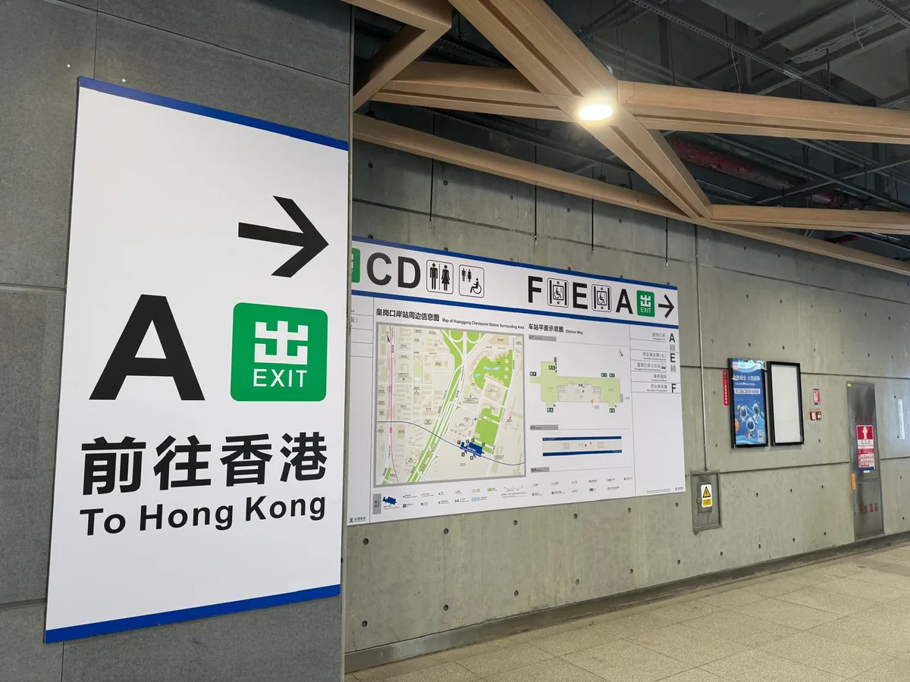
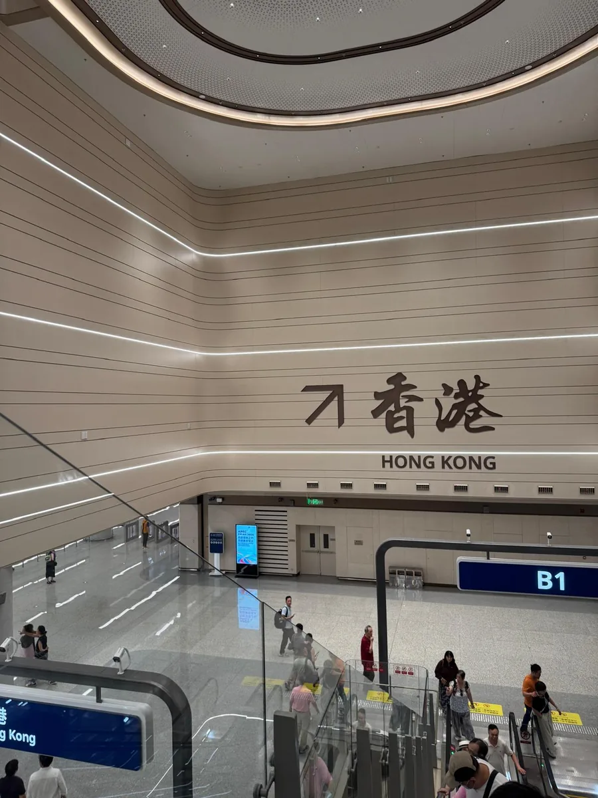
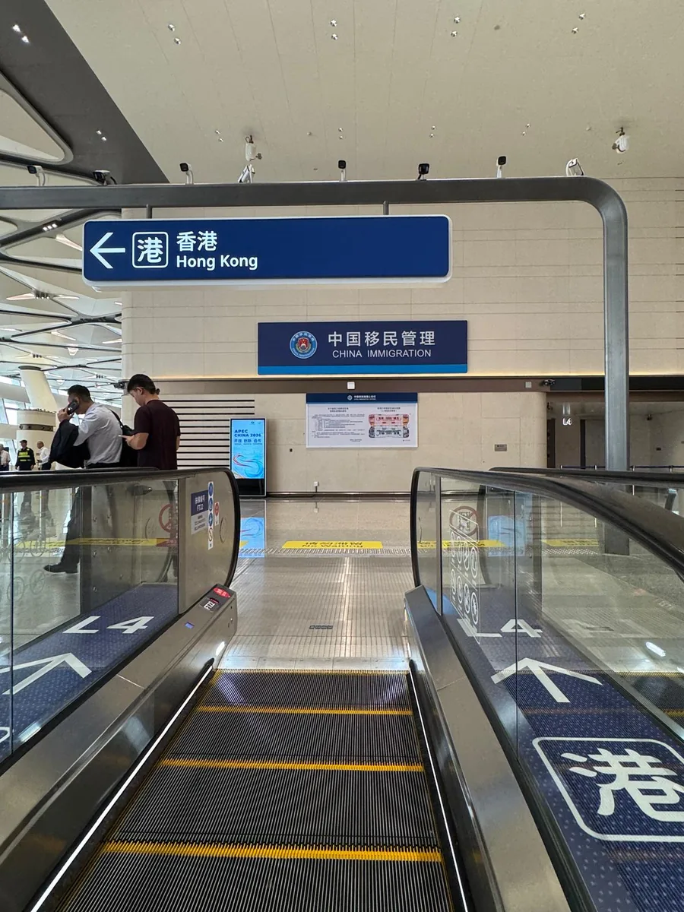
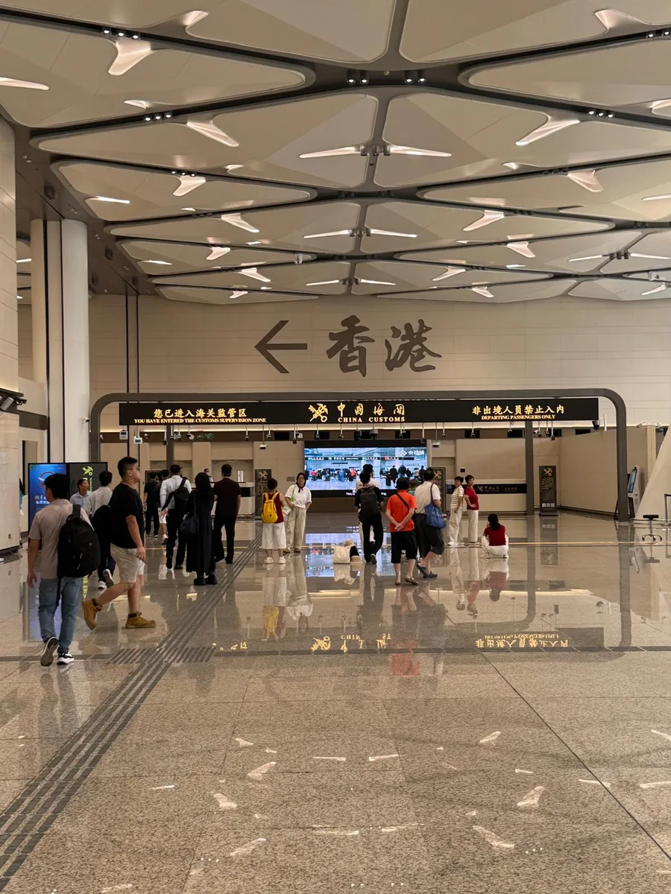
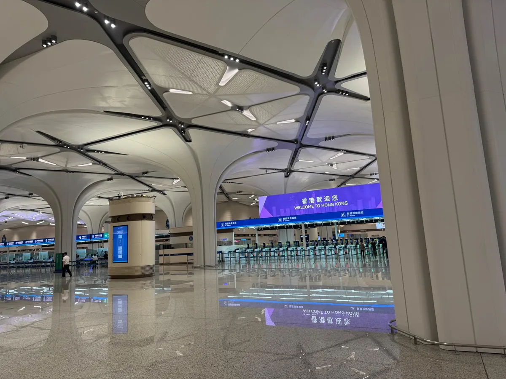
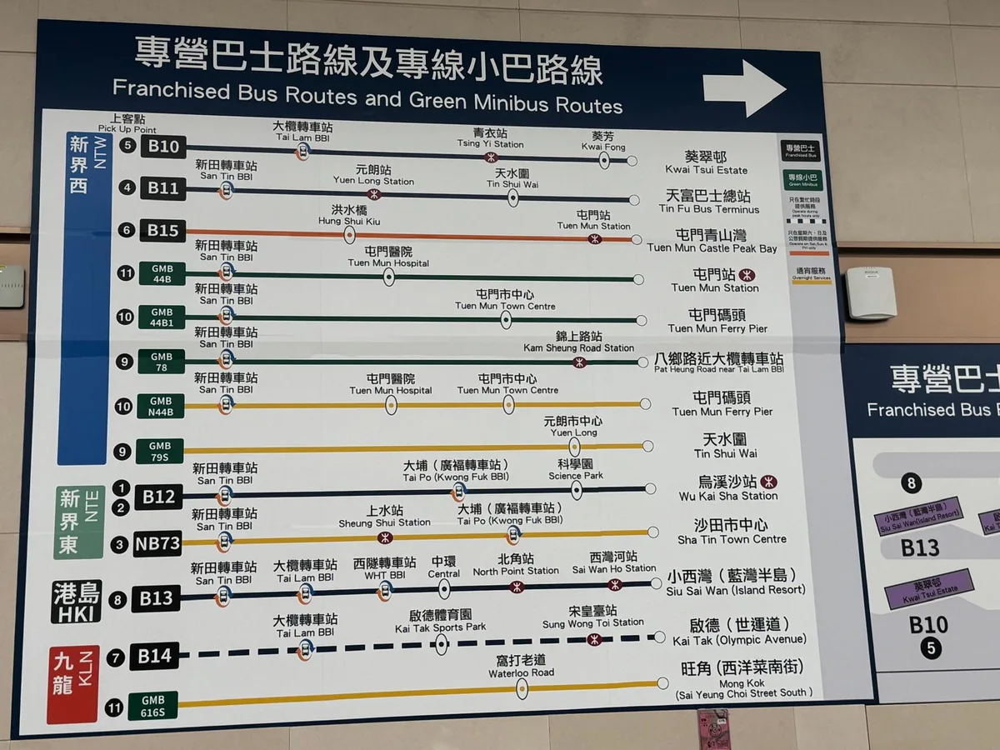
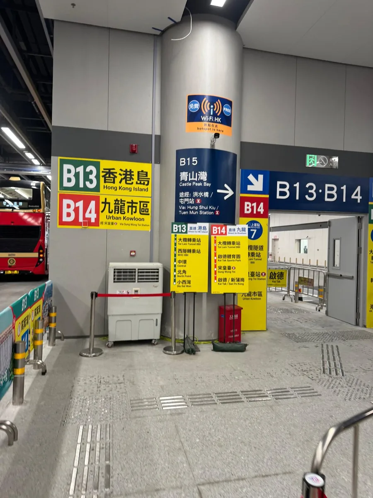

香港⇔深圳の新「皇崗口岸」が開通検査は1回・24時間渡れる巨大ボーダーを現地写真で【2026年10月】
2026年10月12日の朝6時30分、香港と深圳を結ぶ新しい皇崗口岸（ファングァン・こうがんこうがん）が開業しました。
数ある香港・深圳間の口岸（イミグレーション）の中でも、ここは特別です。何が特別なのか、開通直後の現地で撮影した写真とあわせてお届けします。
深圳への出張が多い方には、移動の選択肢が一つ、はっきり増えた話です。

何が変わったのか — 検査が「1回」になった
これまで香港と深圳を陸路で行き来するときは、香港側で1回、深圳側で1回、あわせて2回の出入境検査を通る必要がありました。
新しい皇崗口岸は「一地両検」という方式です。意味は読んで字のとおりで、一つの建物の中に、香港と中国本土の両方の検査場が入っています。並ぶのは1回、パスポートを出すのも1回。そのまま歩いて反対側に抜けられます。
当局の発表では、通関にかかる時間はこれまでの約30分から約5分に短縮されるとされています。
実際に開通直後に渡った人に聞くと、検査の手続きそのものは1分ほど。建物が巨大なので中を歩く時間のほうが長く、トータルで5分ちょっとだったそうです。発表どおり、というより、手続きだけならそれ以上です。
建物も新しくなりました。延べ床面積は約69万平方メートル、地上10階建て。自動ゲート134本・有人窓口68か所という、世界でも最大級の陸路イミグレーションです。

もう一つの強み — 24時間、渡れる
皇崗口岸のもともとの持ち味が、これです。
香港と深圳のあいだには複数の口岸がありますが、旅客が24時間通れる大型の陸路口岸はここだけです。羅湖も落馬洲支線（福田）も、深夜は閉まります。
深圳での会食が長引いた夜、終電を逃した夜でも、ここなら香港に帰れる。駐在員にとっては「最後の帰り道」として覚えておく価値があります。
実際の流れ — 迷う要素がほとんどない
深圳側からの流れを、写真で追ってみます。
深圳メトロ7号線「皇崗口岸」駅を降りると、「前往香港 To Hong Kong」のサインが出ています。あとはこれに従って進むだけです。

中国側の出境検査と税関を抜けると、建物の中をそのまま歩いて、香港側の入境エリアへ。

「香港歓迎您 WELCOME TO HONG KONG」の表示の下に、e-道（自動ゲート）がずらりと並んでいます。香港IDやe-道登録があればここを、なければ有人カウンターを通ります。

開通直後ということもあり、館内はどこも新品そのもの。サインは中英併記で大きく、初めてでも迷う要素がほとんどありません。
香港側の足 — バスが建物に直接乗り入れ
今回の開業で、香港側の交通も大きく変わりました。
以前の皇崗口岸といえば、落馬洲との間を往復する接続バス（通称・皇巴士）に乗り換えるのがお約束でしたが、この皇巴士は廃止。かわりに、香港各地と口岸を直接結ぶバスとミニバスが、建物の乗り場に乗り入れる形になりました。
主な路線はこちらです（2026年10月時点）。
| 路線 | 行き先 | メモ |
|---|---|---|
| B13 | 香港島（小西湾） | 中環・北角を経由。香港島へ直達 |
| B14 | 九龍市区（旺角方面） | 啓徳・宋皇臺を経由 |
| B12 | 烏渓沙駅 | 科学園・大埔を経由 |
| B10 / B11 | 葵涌・天水囲方面 | 新界西へ |
| B15 | 屯門・青山湾 | 週末・祝日中心 |
| NB73 | 沙田市中心 | 上水経由 |
| ミニバス 44B・78 ほか | 屯門・八郷など | 深夜便（N44B・79S・616S）もあり |
運行時間帯は路線によって異なります（ピーク時のみ・週末のみの路線があります）。お出かけ前に最新の時刻をご確認ください。
中環や北角からB13で乗り換えなしに深圳の玄関口まで行ける、というのは、これまでになかった選択肢です。


どんな人に効くか
- 深圳出張が多い方：福田CBDへは深圳メトロ7号線で直結。検査1回・約5分なら、「面倒だから」と避けていた日帰り出張の心理的ハードルが下がります
- 夜が遅くなりがちな方：24時間通関は、ここだけの保険です
- 香港島在住の方：B13の登場で、中環から乗り換えなしの新ルートができました
なお、今回の「一地両検」方式は、運用が順調なら他の口岸にも広げる方針が示されています。香港と深圳の行き来は、これからさらに軽くなっていきそうです。
まとめ
- 新しい皇崗口岸は2026年10月12日に開通
- 検査は1回・パスポート1冊。手続き自体は1分ほど、歩く時間を入れて5分強
- 旅客が24時間渡れる唯一の大型陸路口岸
- 皇巴士は廃止。B13（香港島直達）などのバスが建物に直接乗り入れ
- 深圳側はメトロ7号線「皇崗口岸」駅と直結
香港と深圳は、もう「別の街に行く」というより「隣町に行く」感覚に近づいています。大湾区でのビジネスを考えるうえで、この距離感の変化は見逃せません。
弊社では香港を拠点にした中国ビザの申請サポートや、深圳・大湾区ビジネスのご相談も承っています。「深圳にも行く前提で香港を使いたい」という方は、お気軽にお問い合わせください。
※本記事は2026年10月時点の情報です。運用・交通路線は変更される場合があります。中国本土への入境には、国籍や滞在目的に応じたビザ等の要件があります。
執筆：CSV CONSULTING LIMITED（支援実績7,000社以上／代表のビザコンサル経験27年）